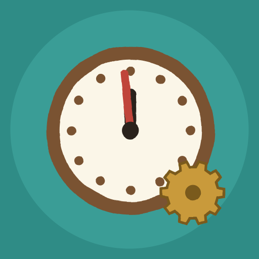

Bir Dakika — Gizlilik Politikası
Son güncelleme: 18 Kasım 2026 · Torgio Games
Kısaca
- Bir Dakika seni tanıyan hiçbir kişisel veri (ad, e-posta, konum, reklam kimliği) toplamaz. Yalnızca çökme raporları ve, sen izin verirsen, anonim oyun istatistikleri gönderilir.
- Hesap yok, reklam yok, satın alma yok, bildirim yok. Analitik yalnızca sen "evet" dersen çalışır.
- Oyun internetsiz oynanır; ilerlemen yalnızca telefonunda tutulur.
Cihazında saklanan bilgiler
Oyun ilerlemen (bitirdiğin bölümler, albümündeki fotoğraflar, izlediğin hikâye sahneleri, en son oynadığın bölüm, dil, ses, müzik, titreşim ve hareketi azaltma ayarları) telefonunda saklanır ve bize gönderilmez. Telefonunun kendi yedeklemesi (Google yedekleme ya da iCloud) açıksa bu bilgiler senin yedeğine dahil edilebilir; bu yedekleri biz göremeyiz. Oyunu silersen cihazdaki bilgiler de silinir.
Ücretsiz
Oyunun tamamı ücretsizdir. Uygulama içi satın alma ve reklam yoktur; oyun hiçbir ödeme bilgisi istemez ve mağazaya ödeme için bağlanmaz.
İzinler
Oyun konum, kamera, mikrofon, kişiler ya da dosya izni istemez. İnternet izni yalnızca çökme raporları ve (izin verirsen) oyun istatistikleri için kullanılır; oyunun kendisi internetsiz oynanır. Oyundaki "fotoğraf makinesi" hikâyenin bir parçasıdır; telefonunun kamerasını kullanmaz ve galerine bir şey kaydetmez. Titreşim yalnızca dokunuşlara karşılık verir ve Ayarlar'dan kapatılabilir.
Bağlantılar
Ayarlar'daki "Gizlilik politikası" ve "Destek" düğmeleri bu siteyi tarayıcında açar. Bu sayfalar GitHub Pages'te barındırılır; GitHub, her web sitesi gibi teknik erişim kayıtları tutabilir (GitHub gizlilik bildirimi).
Çökme raporları (Firebase Crashlytics)
Oyun çökerse ya da ciddi bir hata olursa, hatanın teknik kaydı (hangi kod satırında olduğu), cihaz modeli, işletim sistemi sürümü, oyun sürümü ve rastgele bir kurulum kimliği Google'ın Firebase Crashlytics hizmetine (Google LLC, ABD) gönderilir. Adın, e-postan, reklam kimliğin ya da konumun gönderilmez. Bu kayıtları yalnızca hataları bulup düzeltmek için kullanırız ve Crashlytics onları 90 gün sonra siler. Ayrıntılar: Firebase gizlilik ve güvenlik.
Google Play ve App Store da çökme ve performans bilgilerini kendi kurallarına göre toplayıp bize isimsiz özet olarak gösterebilir.
Oyun istatistikleri (Firebase Analytics, isteğe bağlı)
İlk açılışta oyun sana anonim oyun istatistikleri göndermemize izin verip vermediğini sorar. Varsayılan olarak kapalıdır; "Hayır" dersen hiçbir istatistik toplanmaz. "Evet" dersen hangi bölümün başlayıp bittiği, oturumların süresi ve cihaz modeli gibi anonim olaylar Google'ın Firebase Analytics hizmetine (Google LLC, ABD) gönderilir. Amaç, oyuncuların nerede zorlandığını görüp oyunu iyileştirmektir. Adın, e-postan, konumun ve reklam kimliğin toplanmaz; reklam kişiselleştirme ve reklam amaçlı veri paylaşımı her zaman kapalıdır. Seçimini istediğin zaman Ayarlar'daki "Oyun istatistiklerini paylaş" anahtarından değiştirebilirsin. Ayrıntılar: Firebase gizlilik ve güvenlik.
Çocuklar
Oyun her yaşa uygundur. Kimseden, çocuklar dahil, kişisel veri toplamayız.
Değişiklikler
Oyuna veri işleyen yeni bir özellik eklenirse bu politika önceden güncellenir ve tarih yenilenir.
İletişim
torgiogames@gmail.com · Destek
One Minute — Privacy Policy
Last updated: 18 November 2026 · Torgio Games
In short
- One Minute collects no personal data that identifies you (no name, email, location or advertising ID). It sends only crash reports and, if you allow it, anonymous play statistics.
- No account, no ads, no purchases, no notifications. Analytics runs only if you say yes.
- The game plays offline. Your progress stays on your phone.
Information stored on your device
Your progress (chapters finished, photos in your album, story scenes seen, the chapter you played last, language, sound, music, vibration and reduce-motion settings) is stored on your phone and is not sent to us. If your phone's own backup (Google backup or iCloud) is on, it may be included in your personal backup, which we cannot see. Uninstalling the game deletes it from the device.
Free
The whole game is free. There are no in-app purchases and no ads; the game never asks for payment details and never connects to a store to take payment.
Permissions
The game asks for no location, camera, microphone, contacts or storage permission. The internet permission is used only for crash reports and (if you allow it) play statistics; the game itself plays offline. The "camera" in the game is part of the story; it does not use your phone's camera and saves nothing to your gallery. Vibration only answers your taps and can be turned off in Settings.
Links
The "Privacy policy" and "Support" buttons in Settings open this website in your browser. These pages are hosted on GitHub Pages; like any website, GitHub may keep technical access logs (GitHub privacy statement).
Crash reports (Firebase Crashlytics)
If the game crashes or hits a serious error, a technical record of the error (which line of code), the device model, operating system version, game version and a random installation ID are sent to Google's Firebase Crashlytics (Google LLC, USA). Your name, email, advertising ID and location are never sent. We use these records only to find and fix bugs, and Crashlytics deletes them after 90 days. Details: Firebase privacy and security.
Google Play and the App Store may also collect crash and performance information under their own terms and show it to us as anonymous summaries.
Play statistics (Firebase Analytics, opt-in)
On first launch the game asks whether we may receive anonymous play statistics. It is off by default; if you say "No", no statistics are collected. If you say "Yes", anonymous events such as which level was started or finished, session length and device model are sent to Google's Firebase Analytics (Google LLC, USA). The purpose is to see where players get stuck so we can improve the game. Your name, email, location and advertising ID are not collected; ad personalisation and ad-related data sharing are always off. You can change your choice at any time with the "Share play statistics" switch in Settings. Details: Firebase privacy and security.
Children
The game is suitable for all ages. We collect no personal data from anyone, children included.
Changes
If a new feature that processes data is ever added, this policy is updated beforehand with a new date.